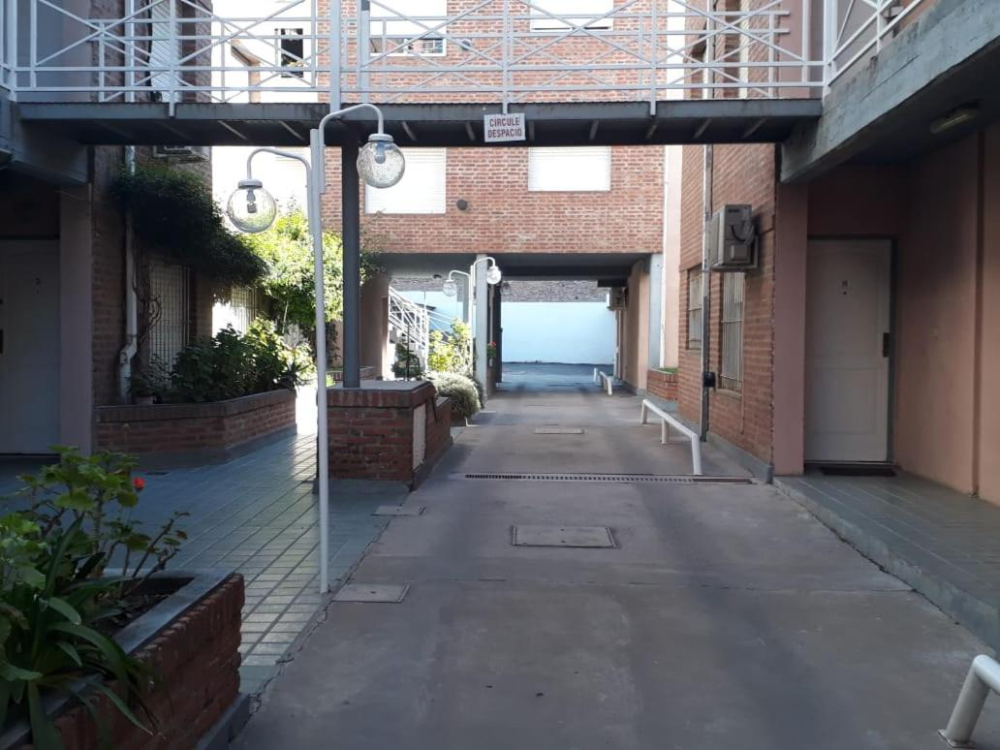
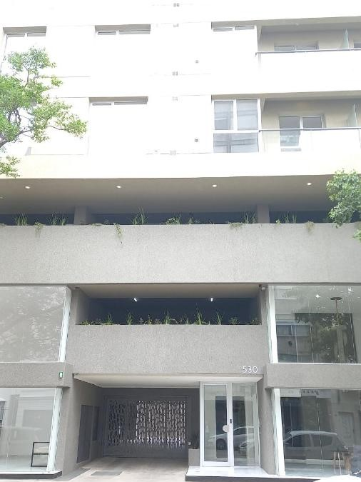
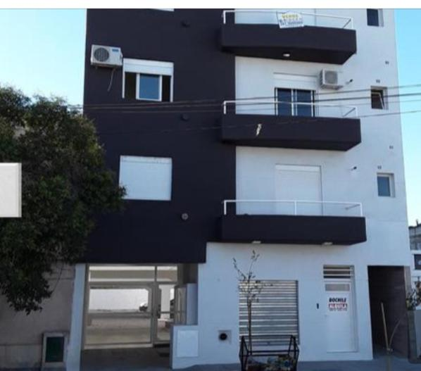

Centro norte I
El CENTRO NORTE I con cochera se encuentra en Bahía Blanca y ofrece terraza, WiFi gratuita y vistas al jardín.
Este apartamento tiene jardín y aparcamiento privado gratuito.
El apartamento dispone de aire acondicionado, 1 dormitorio, sala de estar, cocina totalmente equipada con nevera y baño con bidet y artículos de aseo gratuitos.
Se proporcionan toallas y ropa de cama.
El aeropuerto Comandante Espora es el más cercano y queda a 13 km.

Ubicacion
Centro norte II
El CENTRO NORTE ll a 400 mts del centro con cochera se encuentra en Bahía Blanca.
Hay aparcamiento privado y WiFi gratuita.
El apartamento tiene terraza, vistas a la ciudad, 1 dormitorio, sala de estar, TV de pantalla plana por cable, cocina equipada y baño con bidet y ducha.
Se proporcionan toallas y ropa de cama.
El aeropuerto Comandante Espora es el más cercano y queda a 11 km.

Ubicacion
Departamentos bravard
Los Departamentos Bravard se encuentran en Bahía Blanca, en la provincia de Buenos Aires, y tienen patio.
El establecimiento cuenta con balcón, aparcamiento privado gratuito y WiFi gratuita.
El apartamento dispone de aire acondicionado, 1 dormitorio, sala de estar, cocina totalmente equipada con nevera y baño con bidet y artículos de aseo gratuitos.
Se proporcionan toallas y ropa de cama.
El aeropuerto Comandante Espora es el más cercano y queda a 12 km.

Ubicacion